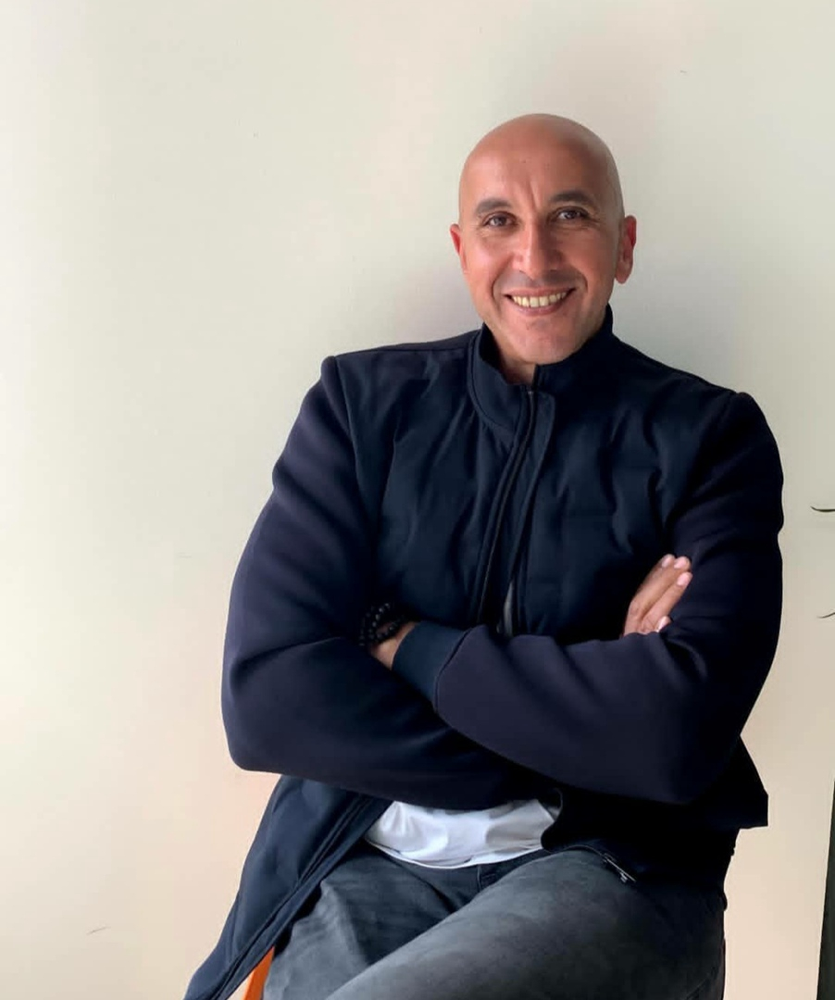
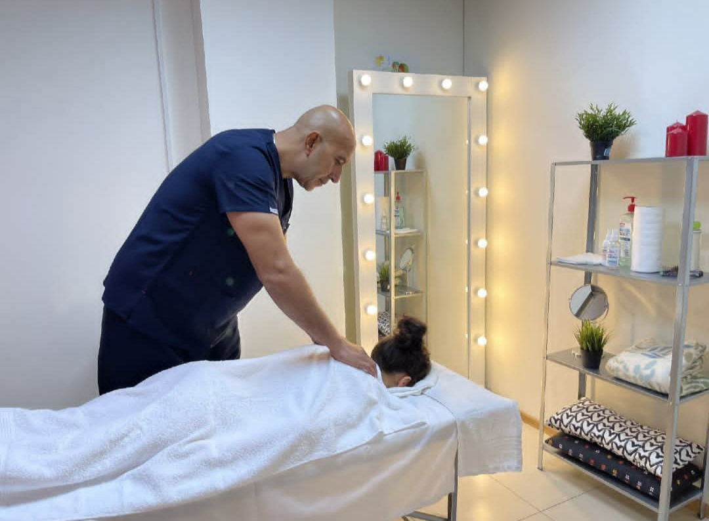
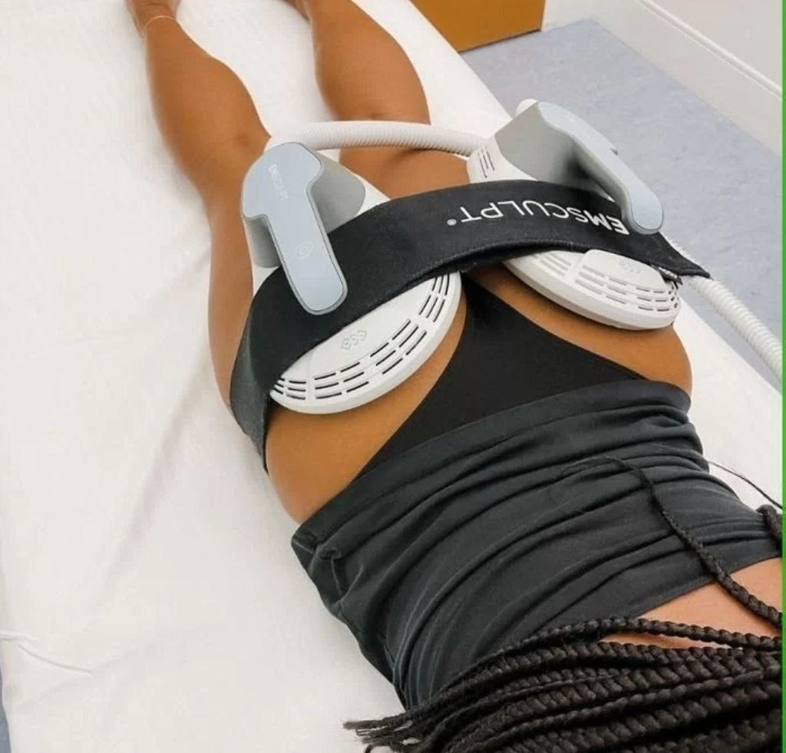
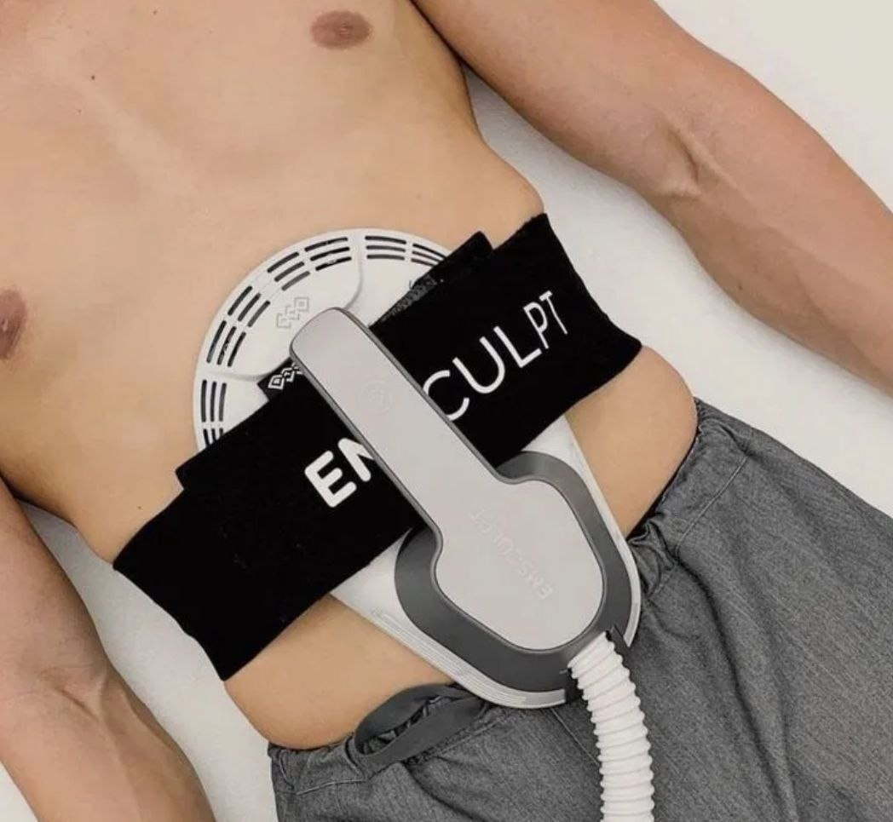
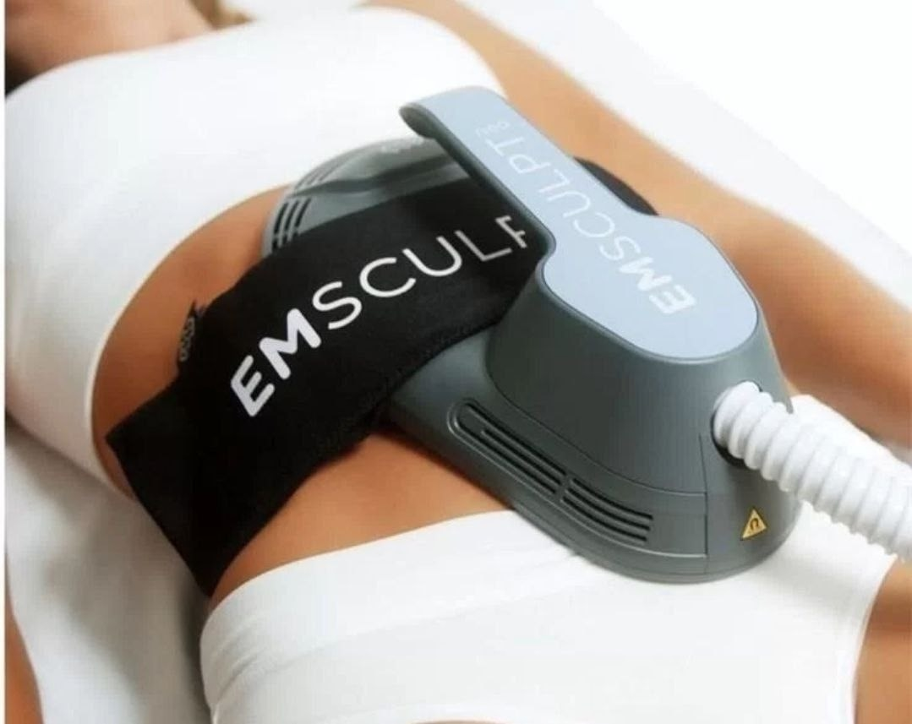
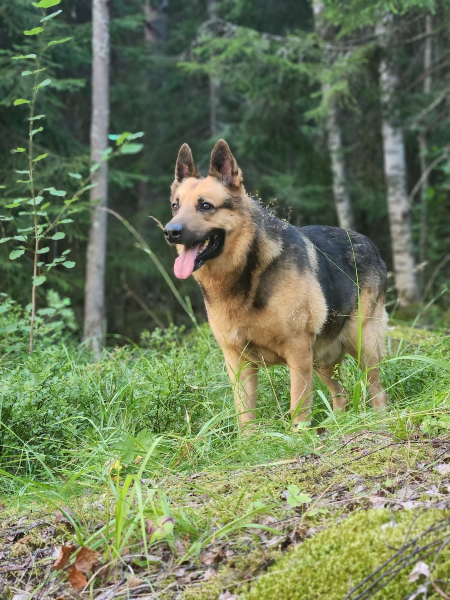
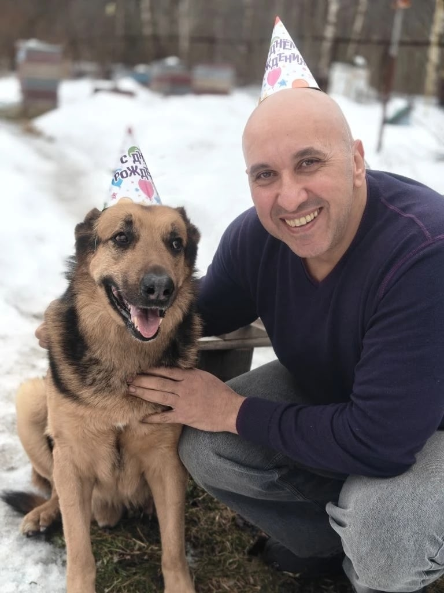

01
Лечебный массаж
Полный сеанс с проработкой зон напряжения и вниманием к вашему самочувствию.
3 200 ₽90 минут
Сертифицированный мастер массажа
Помогаю снять напряжение, вернуть лёгкость движения и почувствовать себя лучше — внимательно и без шаблонных решений.

Здравствуйте, меня зовут Тамер
Более 12 лет я помогаю людям справляться с болью и мышечным напряжением. Основам профессии я учился у немецкого профессора в Хургаде, а квалификацию подтвердил сертификатом Американского университета в Каире.
В работе использую массажные и мануальные техники. После сеанса даю понятные рекомендации: какие упражнения добавить в повседневную жизнь и как поддержать результат.
«Эффект массажа — естественная восстанавливающая сила организма, сила жизни»
Гиппократ
Начинаем не с готовой схемы, а с разговора: что беспокоит, где чувствуется напряжение и какого результата вы ждёте.
Полный сеанс с проработкой зон напряжения и вниманием к вашему самочувствию.
Расширенный формат для более глубокой и продолжительной работы с телом.
Массаж всего тела с профессиональными средствами Aravia.
Бережный формат для детей до 10 лет.
Виброкомпрессионная процедура для тонуса, микроциркуляции и ухода за кожей.
Работа с мышечной усталостью, тонусом и контурами тела.
Высокоинтенсивная электромагнитная стимуляция для тонуса мышц.
Локальная стимуляция выбранной зоны.
Массаж и аппаратная работа с одной выбранной зоной.
Ручная и аппаратная работа в одном полноценном сеансе.
EMS, HI-FEM и RF для тела плюс аппаратный уход для лица.
Выбранная зона тела и расширенная процедура эндосферы.
Точный формат процедуры Тамер подбирает после короткой консультации.

Спокойный кабинет · музыка · удобный столВсё начинается с разговора
Обсуждаем, что беспокоит, где ощущается боль или скованность и как давно.
Начинаем с широких плавных движений, чтобы успокоить нервную систему.
Давление увеличивается постепенно — ровно настолько, насколько это комфортно.
После сеанса вы получаете рекомендации по воде, движению и упражнениям.
Когда ручной работы недостаточно
EMS, HI-FEM, RF и эндосфера помогают сфокусироваться на выбранной зоне, поддержать тонус мышц и дополнить программу работы с телом.





Для тех, кто дочитал до конца
Верный друг, напарник по прогулкам и главный специалист по восстановлению после рабочего дня. Обычно Рой рядом во время сеанса, но если вам так будет спокойнее, на время массажа он с удовольствием побудет в другом месте.
Запись и консультация
Напишите Тамеру в личные сообщения: расскажите, что беспокоит, и он поможет выбрать подходящий формат и время.
Как записаться